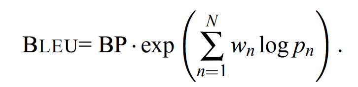
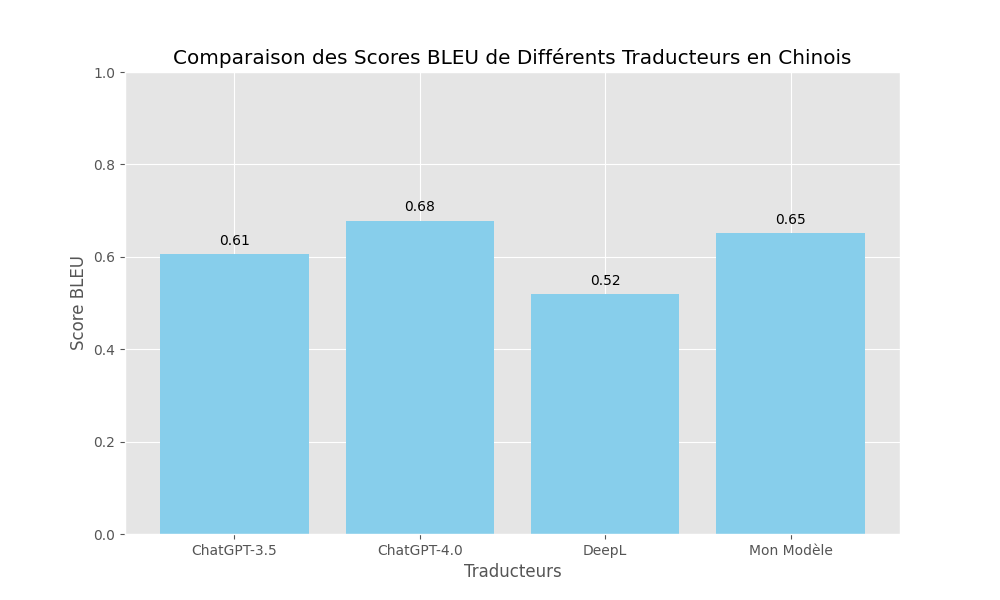

Comparaison des Traducteurs Automatiques
Nous avons 4 traducteurs différents : ChatGPT-3.5, ChatGPT-4, DeepL et notre propre modèle de traduction.
- 1. ChatGPT-3.5
- Principes et Caractéristiques :Basé sur le modèle GPT-3.5 d'OpenAI, une version antérieure du modèle de langue GPT. Utilise l'apprentissage profond et le traitement du langage naturel (NLP) pour comprendre et générer du texte.Avantages :Compréhension contextuelle impressionnante du langage grâce à sa large base de données d'entraînement. Capable de générer des réponses cohérentes et pertinentes dans de nombreuses situations.Inconvénients :Moins précis ou mis à jour que la version plus récente, ChatGPT-4. Peut générer des réponses inexactes ou non pertinentes, nécessitant une supervision humaine.
- 2. ChatGPT-4
- Principes et Caractéristiques :
Version améliorée de ChatGPT basée sur le modèle GPT-4 d'OpenAI. Inclut des améliorations significatives en termes de compréhension du contexte et de précision.
- Avantages :
Plus précis et contextuellement pertinent que les versions précédentes. Meilleure capacité à comprendre et à générer des traductions dans des contextes complexes.
- Inconvénients :
Comme tous les modèles basés sur l'IA, peut encore produire des erreurs ou des interprétations incorrectes. La génération de réponse peut être influencée par les biais présents dans les données d'entraînement.
- 3. DeepL
- Principes et Caractéristiques :
Service de traduction automatique basé sur l'apprentissage profond, reconnu pour la qualité supérieure de ses traductions. Utilise une approche basée sur des réseaux neuronaux pour traduire des textes dans plusieurs langues.
- Avantages :
Souvent jugé supérieur à d'autres services de traduction en termes de précision et de naturel du langage. Offre des traductions dans un large éventail de langues avec des options pour affiner le style et le ton.
- Inconvénients :
Bien que très précis, n'est pas infaillible et peut parfois générer des traductions erronées ou maladroites, en particulier avec des phrases très complexes ou ambiguës. La qualité peut varier selon les paires de langues, certaines étant mieux prises en charge que d'autres.
Comparaison de la Qualité de Traduction
Afin d'évaluer et de comparer la qualité des traductions générées par différents traducteurs, j'ai utilisé le score BLEU (Bilingual Evaluation Understudy) qui est une métrique courante utilisée pour évaluer la qualité des textes traduits par rapport à des traductions de référence.
La principe du score BLEU
Le score BLEU est calculé en comparant les n-grammes (séquences de n mots) du texte traduit avec les n-grammes du texte de référence. Plus le score BLEU est élevé, meilleure est la qualité de la traduction.
Les processus d'évaluation
1. Traduction à évaluer : Collecte des traductions générées par les traducteurs automatiques basé sur les mêmes phrases (nous avons choisi 3 phrases au taotal).
2. Traductions de référence : Collecte des traductions de référence qui sont généralement reconnu par tout le monde.
3. Calcul du score BLEU pour chaque traduction en utilisant l'outil .

Démonstration vidéo de l'obtention de traductions via une interface web et FastAPI
Comparaison de la Qualité de Traduction
Résultats du score BLEU
Phrase 1 : Les résultats du score BLEU pour chaque traducteur sont les suivants :
- Score BLEU ChatGPT-3.5 (Chinois) : 0.6052600461945848
- Score BLEU ChatGPT-4.0 (Chinois) : 0.678364941096179
- Score BLEU DeepL (Chinois) : 0.5184341074271375
- Score BLEU Mon Modèle (Chinois) : 0.650891137493945
Sur la base des scores BLEU, nous pouvons conclure que ChatGPT-4 a obtenu le score le plus élevé, suivi de près par notre modèle de traduction. ChatGPT-3.5 a obtenu un score intermédiaire, tandis que DeepL a obtenu le score le plus bas.
